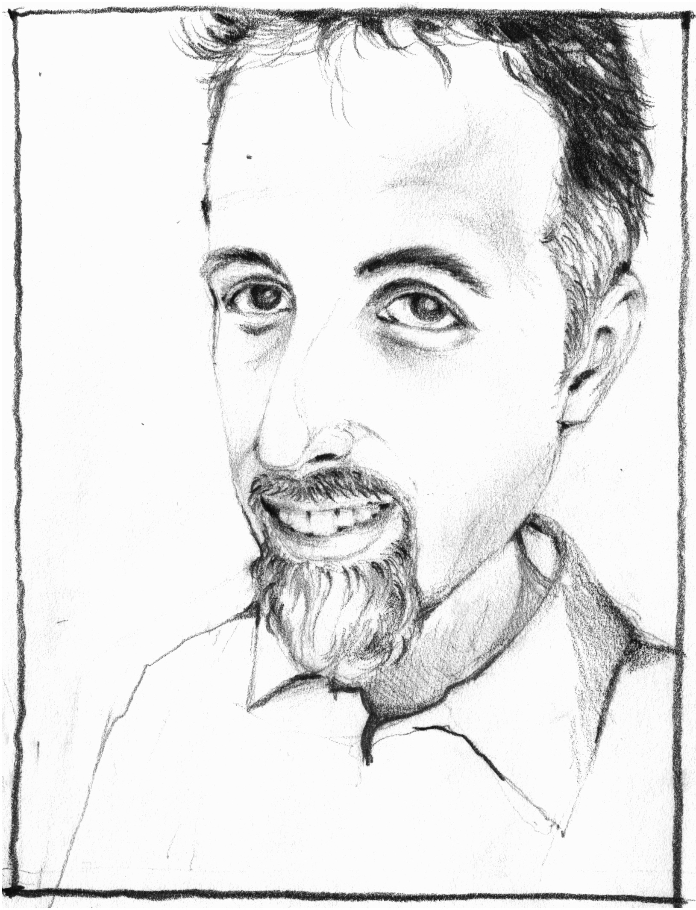

My name is Andru Matthews.

I am an IT professional who spends more time offline than online running Operations for Software Guidance & Assistance, Inc. in Westchester, New York. You can learn more about my professional experiences by checking out my LinkedIn profile. My IT work centers around data, both building databases and performing data analysis.
I used to be an English Lecturer teaching writing and communication to advanced students in Thailand at Chulalongkorn University's Faculty of Arts. I specialized in creative and academic writing.
If you need to reach me professionally, you can message me through LinkedIn. I look forward to hearing from you. I've taken a principled stand against social media or networks, and don't use them. I bet you wouldn't miss them if you did the same.
Personally, I spend most of my time with my family, partnering with my wife to raise our daughter to create, care, and contribute. For myself, I like to swim, walk our village, watch classic films, and play tabletop roleplaying games. I organize a story games group that meets weekly; you can see our schedule on Meetup or follow our exploits at our blog.